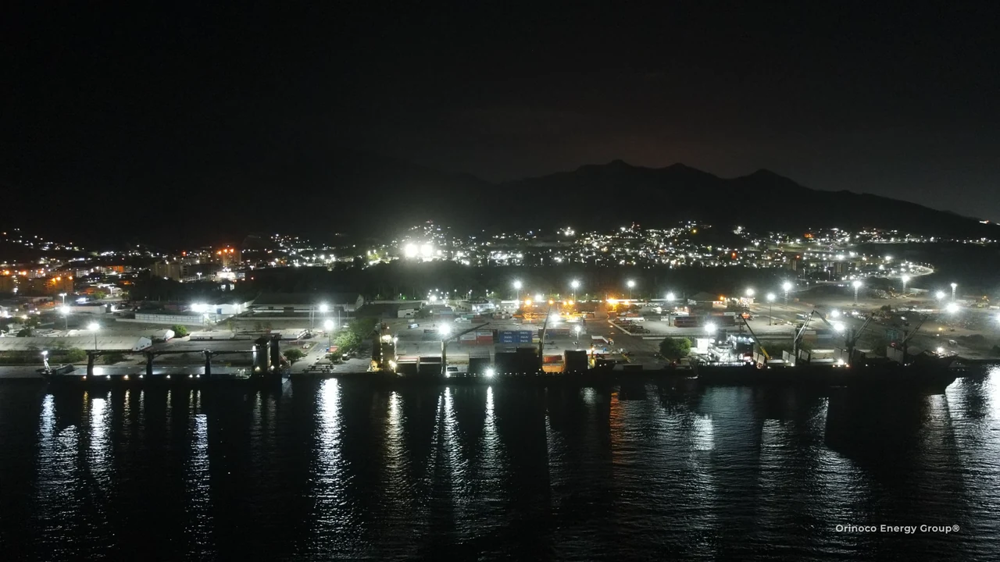
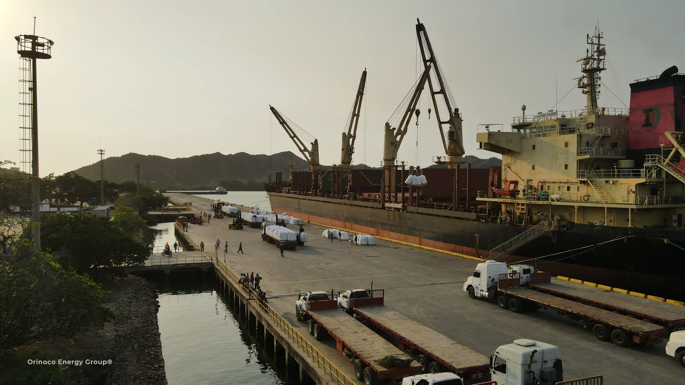

About Orinoco Energy Group
BUILT AROUND
EXECUTION.
International procurement, energy services and logistics for industrial projects in Venezuela and the Americas.

CONSOLIDATING
YOUR TRUST
Our perspective
PRECISION
AT EVERY
HANDOFF.

Our approach draws on more than 20 years of experience in maritime and energy operations.
Orinoco Energy Group brings international supply, energy expertise and logistics together for industrial projects. Houston is a key procurement base; the Orinoco is at the heart of our experience in Venezuela.
OEG Internacional coordinates transport and delivery in the U.S. and Venezuela. OCK, ADUAVEN, ECO GREEN and TUBINCA provide the port, customs, environmental and inspection expertise each project requires.
Understand the allianceOur mission
POWERING
PROJECT DELIVERY.
To help energy and industrial clients source what they need and move complex cargo safely from supplier to project site.
Our vision
CONNECTING
THE AMERICAS.
To be a trusted partner for industrial supply and project logistics across the Americas.
What guides our work
OUR VALUES,
IN PRACTICE.
Precision
Attention to every manoeuvre and planning detail, protecting cargo integrity and project execution.
Operational excellence
Experience applied to efficient maritime and logistics solutions.
Safety & compliance
A disciplined approach to people, assets and the communities where operations take place.
Strategic reliability
A dependable partner for energy and industrial supply chains.
Your next project
LET’S MOVE
IT FORWARD.
Tell us what needs to move, where it starts and where it needs to go.
Discuss your project